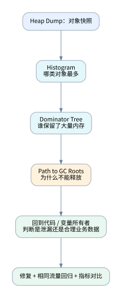
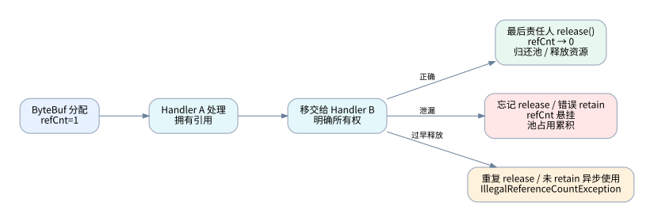
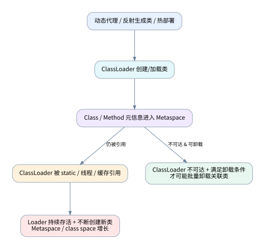
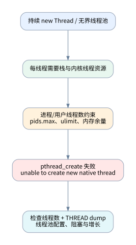

案例 A：堆内泄漏——缓存 / 集合无限增长
现象： 请求量正常但 GC 后 Old 占用持续升高，Full GC 后仍居高不下，最终 Java heap space。

打开 Eclipse MAT 后：
Histogram：按 Shallow Heap 看数量和对象自身内存；看 byte[]、String、业务 DTO、集合节点等异常规模。Dominator Tree：按 Retained Heap 排序，观察某个 Map、缓存管理器或 Service 单例间接保留多少内存。Path to GC Roots：找出引用链，比如 static INSTANCE → cache → map → entry → byte[]。- 与业务指标核对：请求结束后这些对象是否仍有正当用途？缓存是否设置容量/TTL？是否意外使用无限队列？
非常关键：Shallow vs Retained
- Shallow Heap：当前对象本身占用的内存。
- Retained Heap：当对象失去引用、且由它所支配的对象也因此不可达时，理论上能释放的一整批对象内存。
HashMap 自身不一定大，却可能通过 value 持有大量 byte[]。因此不要只看最靠前的“大数组”就去改 byte[] 的创建语句。
修复方向： 缓存增加 TTL / 最大容量、改分页/流式处理、限制批量返回大小、修正静态集合以及异步任务完成后的引用清理。仅增大 Xmx 通常只是延缓出问题的时间。
案例 B：Netty / Spring Cloud Gateway 堆外内存问题
现象： -Xmx 内的 Heap 很稳定，Old 也不高，但进程 RSS 不断上升；可能出现 Netty OutOfDirectMemoryError、OutOfMemoryError: Direct buffer memory，或者先被容器杀掉。

关键概念：谁拿到 ByteBuf，谁负责生命周期？
ByteBuf 初始引用计数一般是 1；retain() 增加，release() 减少，降到 0 时由其实现释放或归还底层资源。异步传递、切片和聚合要遵守 Netty / 框架约定：谁拥有、谁转移、谁释放。
ByteBuf buf = PooledByteBufAllocator.DEFAULT.directBuffer(1024);
try {
buf.writeInt(42);
// 只在当前作用域读取，不把所有权交给其他组件
consumeSynchronously(buf);
} finally {
buf.release();
}
上面是自己分配、自己释放的最小示例，不可照搬到所有 channelRead 或 WebFlux 操作符内。若成功把所有权移交给下游（例如框架接管出站写入），再由本层释放就可能 double release。
两种相反的 bug
- 漏释放 / 多余 retain：占用积累，buffer 池无法回收，可能出现堆外耗尽。
- 提前释放 / 重复释放：
IllegalReferenceCountException: refCnt: 0 等访问失效问题，常发生在异步链路或手工 release 与框架自动释放交错时。
# 有疑点时先在测试环境或灰度开启（高档位有性能开销）
-Dio.netty.leakDetection.level=advanced
# 压测时可短期开启，全量跟踪成本很高
-Dio.netty.leakDetection.level=paranoid
观察 LEAK: ByteBuf.release() was not called...，结合 Created at、Recent access records 回溯。注意 Netty 泄漏检测默认常为采样，没有日志不等于没有泄漏。
排查顺序
- 对齐 RSS 与堆占用，看两者是否背离。
- 看 DirectBufferPool 的
MemoryUsed、TotalCapacity 等监控（注意这类 MXBean 指标不一定能完整覆盖 Netty 所有 native 分配）。
- 区分 JDK NIO 的
MaxDirectMemorySize 路径和 Netty 自身分配/额度逻辑，检查版本及 io.netty.maxDirectMemory 等配置。
- 对 suspect handler、DataBuffer 转换、
retain、release、slice、异步转交、异常分支逐一标注所有权。
- 在压测/灰度开启 Netty Advanced 泄漏检测，复现相同请求大小与并发连接数。
实践提示： Spring WebFlux 的 DataBuffer 可能包装 Netty 引用计数缓冲区；对 join()、filter 读取 body、异常分支、取消订阅后的资源释放要按框架 API 契约检查，而不能简单地“在哪里看到就释放”。
现象： 类加载数量持续增加，Metaspace 接近上限，Heap 并不总是很满，可能触发 OutOfMemoryError: Metaspace。

排查重点是到底谁在重复生成/加载类，谁又把对应 ClassLoader 留住了。场景包括热部署、动态代理、脚本引擎、错误的缓存、过度生成代理类、旧版本反射/序列化框架等。
# JDK 8：看当前加载/卸载类累计信息
jstat -class "$PID" 1000 10
# JDK 8：查看类加载器和类元数据占用（可能有明显开销）
jmap -clstats "$PID"
# 结合 NMT 和 JVM flags
jcmd "$PID" VM.flags
jcmd "$PID" VM.native_memory summary scale=MB
特别讨论： 旧环境中曾可能在内存/类统计中出现大量如下类型：
sun.reflect.GeneratedMethodAccessor123
sun.reflect.GeneratedMethodAccessor124
sun.reflect.GeneratedConstructorAccessor125
sun.reflect.DelegatingClassLoader
JDK 8 的反射实现可能在调用达到阈值后生成访问器类。看到这些名字不意味着已经证明 XStream 一定有 bug；应继续比较增长趋势、类加载器数量、代码是否反复创建序列化器实例以及 ClassLoader 生命周期。某些应用将重复创建的解析器复用，可能减少元数据增长；但“改成 static 就一定解决”不是通用结论，仍需检查线程安全、配置共享和并发行为。
修复方向： 避免不必要的动态类生成；复用线程安全且配置稳定的序列化组件；杜绝热部署旧 ClassLoader 被线程、静态注册表、缓存持有；检查代理类和类加载器缓存策略。盲目增大 MaxMetaspaceSize 可能会掩盖泄漏。
案例 D：线程创建失败——不一定是堆不够

典型症状：
java.lang.OutOfMemoryError: unable to create new native thread
重点是线程资源，而不只是 -Xmx。常见原因：无界线程创建、阻塞任务导致线程池膨胀、系统线程数 / PID 限制、容器 pids.max、本地虚拟内存不足。
ps -o pid,rss,vsz,nlwp,cmd -p "$PID"
ps -L -p "$PID" | head -50
cat /proc/"$PID"/status | grep -E 'Threads|VmRSS|VmSize'
cat /sys/fs/cgroup/pids.max 2>/dev/null
ulimit -u
jcmd "$PID" Thread.print > /data/thread-$PID.txt
注意： -Xss1m × 2000 线程 = 2GiB 是用于估算每线程最大栈空间量级的思路，不等于每个线程一创建就立即驻留 1MiB 的 RSS。还受到 guard pages、保留/提交方式、系统线程结构和平台实现影响。
修复方向： 限制线程池上界、排除阻塞/死锁/慢 IO、优化异步模型、检查 PID 约束。简单降低 -Xss 有栈溢出风险，需验证真实调用深度。
案例 E：容器 OOMKilled——没有 Java 堆 OOM
现象： 最后一条日志正常，实例突然重启；没有 HPROF 或 Java 异常，Kubernetes 显示 OOMKilled。
处理顺序：
- 查
kubectl describe pod、事件、cgroup memory.events（或 v1 对应字段），确认容器内存限制命中。
- 拿 Heap used、进程 RSS、容器内存曲线，同一个时间点对齐。
- 若堆稳定而进程/容器上升，优先考虑 Direct/Netty、Metaspace、线程、JNI/native、文件映射或文件缓存等。
- 若只在流量峰值发生，区分瞬时高峰与长期泄漏；必要时先做限流/背压与更合理的容量预算。